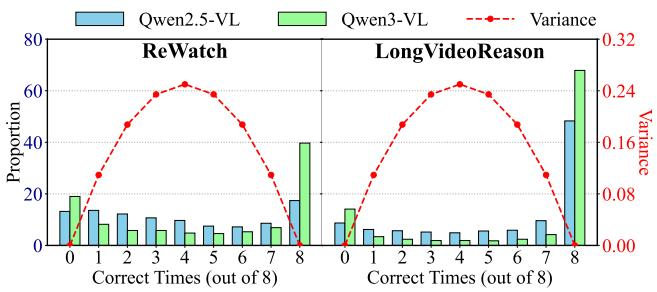

CVPR 2026 Day 2 补录 · P1 · 2026-06-07
VideoSSR：视频 SSL 与 MLLM RLVR 正在合流，VideoSSR 是把视觉内生信号变成可训练奖励的代表
把视频自监督任务转成 video MLLM 后训练的可验证数据生成机制，减少人工标注依赖。
编号2511.06281
优先级P1
类别CVPR 2026 Day 2 补录
会议arXiv + CVPR 2026 Day 2 补录
方法设计 Anomaly Grounding、Object Counting、Temporal Jigsaw 三类视频内生 pretext tasks，构建 VideoSSR-30K，并用 self-supervised tasks 作为 RLVR 可验证奖励。
来源arXiv / OpenReview
先说结论。视频 SSL 与 MLLM RLVR 正在合流，VideoSSR 是把视觉内生信号变成可训练奖励的代表。 把视频自监督任务转成 video MLLM 后训练的可验证数据生成机制，减少人工标注依赖。


核心问题
视频 SSL 与 MLLM RLVR 正在合流，VideoSSR 是把视觉内生信号变成可训练奖励的代表。
方法拆解
设计 Anomaly Grounding、Object Counting、Temporal Jigsaw 三类视频内生 pretext tasks，构建 VideoSSR-30K，并用 self-supervised tasks 作为 RLVR 可验证奖励。
主要贡献
把视频自监督任务转成 video MLLM 后训练的可验证数据生成机制，减少人工标注依赖。
实验看点
摘要称在 17 个 benchmarks、四类视频域 General Video QA、Long Video QA、Temporal Grounding、Complex Reasoning 上稳定提升。
局限与读法
目标更偏 MLLM RL 后训练，不是纯视觉 encoder 预训练；pretext task 的覆盖范围和 reward gaming 风险需要关注。